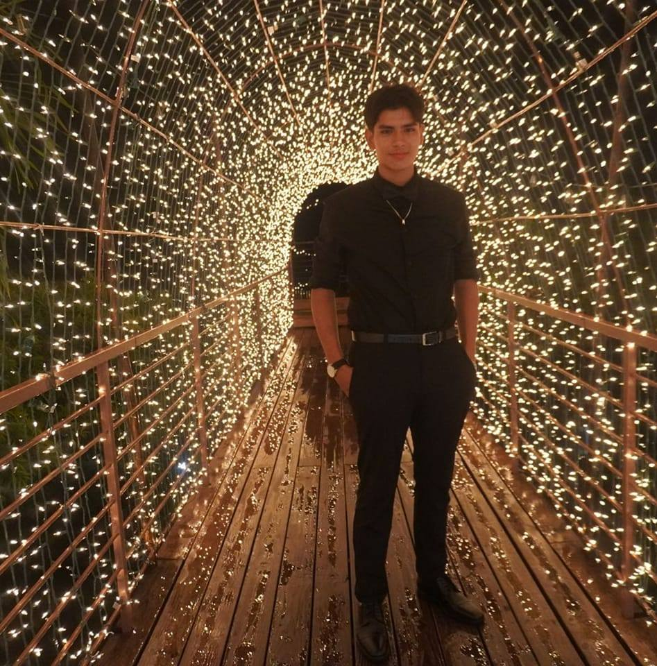

My name is Tyler Montejo, and I graduated from Sacred Heart College with a diploma in Science. I am currently a student at the University of Belize, where I am eager to deepen my knowledge of computers and pursue a career as a software engineer. Throughout my last year of high school, I was honored to receive 16 awards, recognizing my dedication and achievements. In addition to my academic pursuits, I am actively involved in a youth group dedicated to helping our community and making a positive impact on the lives of others.